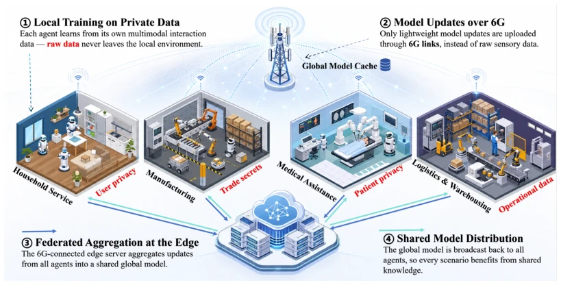
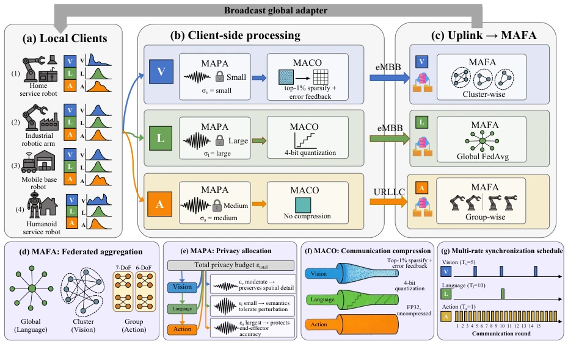
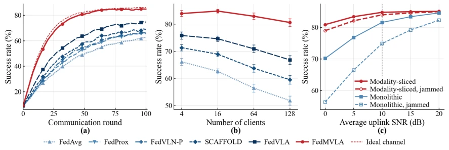
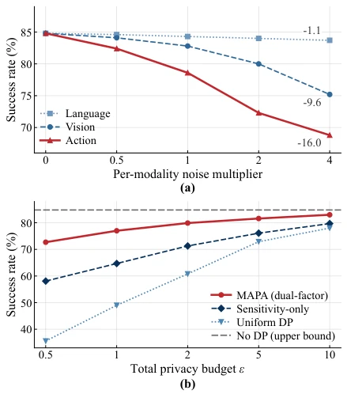
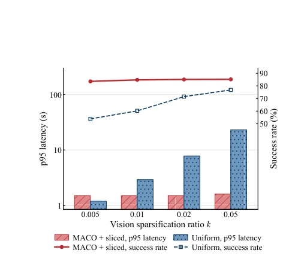

This paper adds some technical seasoning to the "big pie" of 6G embodied intelligence, attempting to use FedMVLA to solve the "acclimatization issues" of VLA model federated learning. The authors keenly point out that these three streams of data—vision, language, and action—are simply of "different classes" in terms of parameter scale, privacy sensitivity, and compression tolerance. Forcing FedAvg [3] such a "one-size-fits-all" strategy either drowns action updates in noise or biases visual features with environmental deviations. FedMVLA implements modality decoupling: action goes via URLLC to preserve accuracy, language is compressed freely, vision undergoes clustering, the logic is quite clear. But do not get too excited; no matter how realistic the 3GPP channel model [13] in simulation is, it cannot simulate electromagnetic interference and mechanical jitter in real factories. Although it is finer-grained than FedVLN [4] and FedVLA [5], whether the cost of reducing FL granularity from Client to Modality is worth it, and the actual latency of the O-RAN control loop, the paper only draws the "big pie" without giving the spoon.
6G networks are expected to become the infrastructure for large-scale embodied intelligence [1], VLA models become the core by unifying the perception-understanding-action closed loop [2]. However, deploying VLA to distributed robot clusters faces threefold challenges of privacy, communication, and heterogeneity. Existing federated learning (FL) methods mainly focus on client-level heterogeneity, such as FedAvg [3] assuming the model as a whole, ignoring internal VLA modality differences. FedVLN [4] only performs partial module aggregation for navigation tasks, FedVLA [5] although introducing MoE still does not solve modality-level optimization. Specifically, vision encoders have many parameters and are sensitive to scenes, language paths tolerate quantization, action paths require extremely high precision. Unified aggregation leads to action update conflicts or privacy leaks, unified compression causes robotic arm jitter. Therefore, a FL framework that distinguishes modality characteristics is needed, rather than only handling task or client differences.

FIGURE 1. Representative application scenarios of federated embodied intelligence in 6G networks. Heterogeneous robotic agents, including industrial manipulators, medical assistants, logistics robots, and household service robots, collaboratively train shared VLA models through 6G-connected edge servers without exchanging raw interaction data.
The core of the FedMVLA framework lies in modality decoupling and collaborative processing. The overall process is: after client-side local training, visual, language, and action update streams are separated through a decoupling module. On the client side, first undergo MAPA for modality-aware privacy allocation (adding noise), then undergo MACO for differentiated compression, finally upload. On the server side, perform modality-aware aggregation through MAFA, reassemble and broadcast. Specific innovations include: 1) MAFA adopts a hierarchical topology, action aggregates by isomorphic group (every round), vision aggregates by scene clustering (every 5 rounds), language aggregates globally (every 10 rounds), solving gradient conflicts; 2) MAPA allocates privacy budget based on sensitivity and tolerance, action preserves accuracy giving medium noise, language gives large noise; 3) MACO matches compression schemes, action FP32 lossless, language 4-bit quantization, vision Top-1% sparse. Network layer cooperates with slicing, action goes via URLLC low-latency slice, vision language goes via eMBB high-throughput slice, ensuring critical path reliability.

FIGURE 2. Overview of FedMVLA. (a) Heterogeneous local clients hold non-IID vision (V), language (L), and action (A) updates. (b) Client-side processing: MAPA calibrates per-modality clipping and noise injection before MACO applies modality-matched compression, so compression and transport are post-processing with respect to the differential privacy guarantee. (c) Each stream is uplinked over its transport slice—eMBB for vision and language and URLLC for action—and MAFA aggregates vision cluster-wise, language globally, and action group-wise by embodiment, after which the global adapter is broadcast back to all clients. Panels (d)–(g) detail MAFA’s aggregation topologies, MAPA’s privacy allocation, MACO’s per-modality compression, and the multi-rate synchronization schedule.
Experiments are based on OpenVLA [2] architecture, verified under 3GPP simulated wireless environment [13]. Settings: 16 clients (4 types of robotic arms), 4 types of manipulation tasks, non-IID data. Baselines include FedAvg [3], FedProx [7], SCAFFOLD [8], FedVLN-P [4], FedVLA [5]. Main metrics are task success rate, uplink payload, and latency. Results show FedMVLA achieves 84.8% success rate, better than FedAvg (62.6%) by 22.2 percentage points. Uplink payload reduced by 95.6%, p95 latency maintained at 1.5s. Performance is more stable when extended to 128 clients. Ablation experiments show that removing modality decoupling leads to performance degradation. Privacy analysis shows MAPA allocates 61% budget to action when ε=1. Anti-interference tests prove URLLC slice is more robust under jamming.

FIGURE 3. System-level performance over the 6G wireless stack. (a) Convergence at the canonical operating point (16 clients, two cells, 10 dB average uplink SNR); thin dashed curves are ideal-channel references. (b) Final task success rate when scaling from four clients in one cell to 128 clients across eight cells at a fixed total budget of 8,000 demonstrations. (c) Robustness to fading and pulsed jamming (duty cycle 0.3, INR 10 dB); both transport variants use the same FedMVLA learning algorithm and differ only in transport.

FIGURE 4. Privacy analysis. (a) Per-modality noise tolerance: Gaussian noise of multi- plier zm is injected into one modality’s update only. (b) Task success rate versus total privacy budget under record-level differential privacy with RDP accounting (δ = 10−5); the legend reports MAPA’s optimized budget allocation at ε = 1.

FIGURE 5. p95 of the round-critical uplink completion time (bars, log scale) and task success rate (lines) versus the vision sparsification ratio k. The dotted line marks the FedAvg FP32 reference (34 MB per round). screening before redistribution: edge servers can enforce joint, workspace, velocity, and torque limits, while the Non-RT RIC maintains safety profiles and near-real-time components perform feasibility checks. Anti-jamming protection should coordinate frequency hopping and spread-spectrum signaling at the physical layer [14], RIC-based detection and slice remapping at the control layer, and staleness-aware or norm- bounded aggregation at the learning layer. Randomized slice hopping should also be evaluated against its signaling and scheduling overhead.